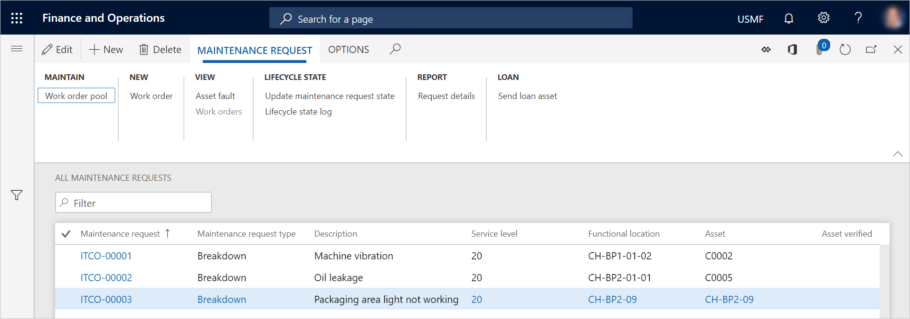
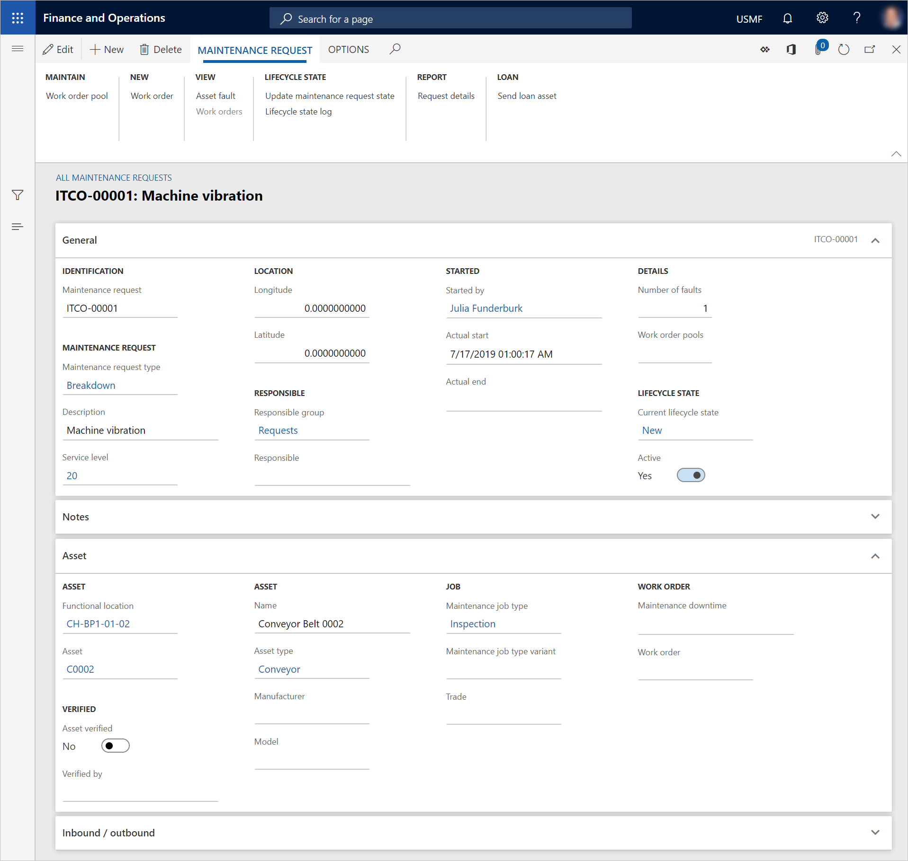

Wartungsanfragen
Important
Dynamics 365 for Finance and Operations hat sich zu speziell entwickelten Anwendungen entwickelt, mit denen Sie bestimmte Geschäftsfunktionen verwalten können. Weitere Informationen zu diesen Änderungen finden Sie im Dynamics 365-Lizenzierungshandbuch.
Wartungsanfragen sind Hinweise oder Erklärungen, die erstellt werden, um einen Manager oder Planer zu informieren, dass für eine Anlage möglicherweise ein Wartungs- oder Reparaturauftrag erforderlich ist, ohne dass jedoch ein Arbeitsauftrag erstellt wird. Wenn den Inhalt einer Wartungsanfrage als gültig betrachtet wird, kann ein Arbeitsauftrag auf Basis der Wartungsanfrage erstellt werden.
Wartungsanfragen können für jede Anlage in Asset Management erstellt werden. Unterschiedliche Arten von Wartungsanfragen können erstellt werden, je nachdem, wie das Unternehmen Wartungsanfragen verwendet. Nachfolgend finden Sie einige Beispiele:
- Wartungsanfragen
- Notizen
- Korrekturen oder Verbesserungen
- Investitionen
- Depotreparatur (Dieser Typ wird verwendet, wenn Sie Anlagen von einem anderen Standort erhalten, damit Sie einen Wartungs- oder Reparaturauftrag erledigen können. Anschließend geben Sie die Anlage zurück.)
Wartungsanfragen anzeigen
Um Wartungsanfragen anzuzeigen, wählen Sie Anlagenverwaltung > Allgemeines > Wartungsanfragen > Alle Wartungsanfragen, Aktive Wartungsanfragen oder Meine Wartungsanfragen für funktionale Standorte aus. Jede Listenseite zeigt einige der Informationen an, die sich auf eine Wartungsanfrage bezieht.

Note
Verwenden Sie die Listenseite Meine Wartungsanfragen für funktionale Standorte, um eine Liste der Wartungsanfragen anzuzeigen, die entweder funktionalen Standorte enthalten, denen Sie als Arbeitskraft zugeordnet sind, oder Anlagen, die an funktionalen Standorten eingerichtet sind, denen Sie als Arbeitskraft zugeordnet sind. (Informationen darüber, wie Sie funktionale Standorte für Wartungsarbeiter einrichten, finden Sie unter Wartungsarbeiter und Arbeitskräftegruppen.)
Obwohl Informationen zu Kundenkonten in Asset Service Management (externe Wartung) verfügbar sind, sind diese nicht in Asset Management verfügbar (interne Wartung).
Um die Detailansicht eines Datensatzes zu öffnen, wählen Sie auf der Listenseite Alle Wartungsanfragen in der Rasteransicht eine Verknüpfung in der Spalte Wartungsanfrage aus.

Die Schaltflächen im Aktivitätsbereich sind auf Registerkarten zusammengefasst. Die folgende Tabelle beschreibt kurz die Schaltflächen, die sich auf Anlagenmanagement beziehen.
| Name der Schaltfläche | Beschreibung |
|---|---|
| Bearbeiten | Dient zum Bearbeiten der ausgewählten Wartungsanfrage. |
| Neue | Erstellt eine neue Wartungsanfrage. |
| Löschen | Löscht die ausgewählte Wartungsanfrage. |
| Arbeitsauftragspool | Verbindet die ausgewählte Wartungsanfrage mit einem Arbeitsauftragspool. |
| Arbeitsauftrag | Erstellt einen Arbeitsauftrag basierend auf der ausgewählten Wartungsanfrage. |
| Anlagenfehler | Klicken Sie auf Anlagenfehler, wo Sie eine Fehlererfassung für die ausgewählte Wartungsanfrage erstellen können. |
| Arbeitsaufträge | Hier wird eine Liste aller Arbeitsaufträge angezeigt, die mit der ausgewählten Wartungsanfrage verbunden sind. |
| Wartungsanfragenstatus aktualisieren | Aktualisiert den Status der Wartungsanfrage. |
| Lebenszyklusstatusprotokoll | Hiermit wird ein Protokoll angezeigt, das den Lebenszyklusstatus der ausgewählten Wartungsanfrage enthält. |
| Wartungsanfragedetails | Dient zum Drucken eines Berichts, der Details der ausgewählten Wartungsanfrage anzeigt. |
| Anlagenausleihe senden | Wählen Sie eine Anlagenausleihe aus, die als temporäre Ersetzung der Anlage dienen soll, die in der ausgewählten Wartungsanfrage ausgewählt ist. |
| Anlagenausleiche zurückgeben | Erfassen Sie die Anlagenausleihe als zurückgegeben. |